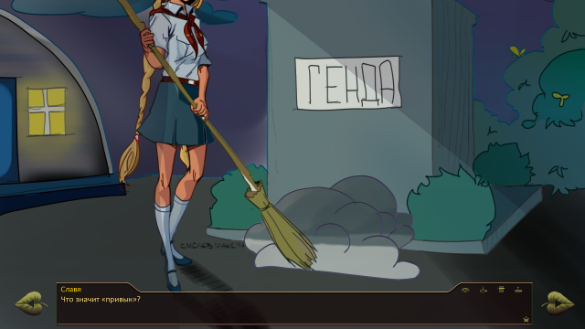

7 дней лета, билд 0.19h (Дрище-пролог)
Страница 3 из 4 •  1, 2, 3, 4
1, 2, 3, 4
Re: 7 дней лета, билд 0.19h (Дрище-пролог)
автор Элдхэнн в Пн 1 Июн 2015 - 0:33
Ну разумеется. В питоне, как и в перле, под if-ом всё кастуется к логическому типу. В частности, единица прекрасно кастуется в True. А вот проинициализировать я забыл, факт.

Элдхэнн- Людовед

- Сообщения : 1002
Дата регистрации : 2015-03-30
Возраст : 38
Откуда : Москва
Re: 7 дней лета, билд 0.19h (Дрище-пролог)
автор Moonshine в Пн 1 Июн 2015 - 3:41
- Спойлер:
5515 Порядок слов можно поудачнее сделать.
5568 круг костра
5571 пробел
5584 пробел
5603 недоверчивая
5606 “и” убрать или переставить.
5639 пробел
5652 пробелы
5661 вывод для себя
5677 индивидуально ему присущими ориентирами
5692 пробел
5737 пробел
5746 приходилась
5753 пробел
5952 пробел
5954 пробел
6059 тренировка
6060 или
6068 пробел
6103 расстановок
6118 Может, как-то перефразировать?
6121 друг в другу
6141 пробел
6154 пробел
6172 пробел
6183 будет
6367 во
6984 так
7342 пробел
7388 госте
7789 follow by
7847 Но я же записывался на футбол.
7851 поворота
7895 Электролкина
7914 куску
8972 своё
9019 всё
9282 пробел
10735 знакомуб
Эпилог
118 непослушая
214 размерено
707 дала
Еще вылезло в конце, что dv_smile_coat картинка не найдена, у всех так или у меня криво установилось?
В этот раз получил "Больше, чем жизнь", потом отпишусь на счет увиденного.

Moonshine- Маргинал

- Сообщения : 341
Дата регистрации : 2015-05-05
Re: 7 дней лета, билд 0.19h (Дрище-пролог)
автор dyatel в Пн 1 Июн 2015 - 14:56
dyatel- Ньюфаг

- Сообщения : 2
Дата регистрации : 2015-05-30
Re: 7 дней лета, билд 0.19h (Дрище-пролог)
автор 7dl-kun в Пн 1 Июн 2015 - 17:57

7dl-kun- Находка для шпиона

- Сообщения : 3026
Дата регистрации : 2014-09-07
Откуда : здесь столько наркоманов?
Re: 7 дней лета, билд 0.19h (Дрище-пролог)
автор kuznetz в Пн 1 Июн 2015 - 23:38
I'm sorry, but an uncaught exception occurred.
While running game code:
File "game/scenario_alt/routes/alt_dv_7dl_route.rpy", line 1534, in script
File "screens.rpy", line 801, in python
Exception: Open text tag at end of string u'\u042f \u0437\u0430\u043a\u0440\u044b\u0432\u0430\u044e \u0433\u043b\u0430\u0437\u0430 \u0438 \u0432\u0434\u044b\u0445\u0430\u044e \u0433\u043e\u0440\u044c\u043a\u043e\u0432\u0430\u0442\u044b\u0439 \u0430\u0440\u043e\u043c\u0430\u0442 \u0432\u043e\u043b\u043e\u0441 \u0410\u043b\u0438\u0441\u044b. {w]\u042f \u043f\u044b\u0442\u0430\u044e\u0441\u044c \u0443\u0431\u0435\u0434\u0438\u0442\u044c \u0441\u0435\u0431\u044f, \u0447\u0442\u043e \u0432\u0441\u0435 \u043c\u043e\u0438 \u043f\u0440\u0435\u0434\u0447\u0443\u0432\u0441\u0442\u0432\u0438\u044f \u2014 \u044d\u0442\u043e \u043f\u0440\u043e\u0441\u0442\u043e \u043f\u0440\u0435\u0434\u0447\u0443\u0432\u0441\u0442\u0432\u0438\u044f, \u0438 \u0435\u0441\u043b\u0438 \u043f\u0440\u0438\u043b\u043e\u0436\u0438\u0442\u044c \u0434\u043e\u0441\u0442\u0430\u0442\u043e\u0447\u043d\u043e \u0443\u0441\u0438\u043b\u0438\u0439, \u0442\u043e \u043c\u043e\u0436\u043d\u043e \u043f\u0435\u0440\u0435\u043a\u0440\u043e\u0438\u0442\u044c \u0440\u0435\u0430\u043b\u044c\u043d\u043e\u0441\u0442\u044c \u043f\u043e\u0434 \u0441\u0435\u0431\u044f!'.
-- Full Traceback ------------------------------------------------------------
Full traceback:
File "C:\Users\Ivan\Desktop\7dl-Alisa\renpy\bootstrap.py", line 265, in bootstrap
renpy.main.main()
File "C:\Users\Ivan\Desktop\7dl-Alisa\renpy\main.py", line 327, in main
run(restart)
File "C:\Users\Ivan\Desktop\7dl-Alisa\renpy\main.py", line 78, in run
renpy.execution.run_context(True)
File "C:\Users\Ivan\Desktop\7dl-Alisa\renpy\execution.py", line 509, in run_context
context.run()
File "C:\Users\Ivan\Desktop\7dl-Alisa\renpy\execution.py", line 288, in run
node.execute()
File "C:\Users\Ivan\Desktop\7dl-Alisa\renpy\ast.py", line 455, in execute
renpy.exports.say(who, what, interact=self.interact)
File "C:\Users\Ivan\Desktop\7dl-Alisa\renpy\exports.py", line 803, in say
who(what, interact=interact)
File "C:\Users\Ivan\Desktop\7dl-Alisa\renpy\character.py", line 807, in __call__
self.do_display(who, what, cb_args=self.cb_args, **display_args)
File "C:\Users\Ivan\Desktop\7dl-Alisa\renpy\character.py", line 673, in do_display
**display_args)
File "C:\Users\Ivan\Desktop\7dl-Alisa\renpy\character.py", line 452, in display_say
what_text = show_function(who, what_string)
File "C:\Users\Ivan\Desktop\7dl-Alisa\renpy\character.py", line 657, in do_show
**self.show_args)
File "screens.rpy", line 801, in say_wrapper
File "C:\Users\Ivan\Desktop\7dl-Alisa\renpy\character.py", line 263, in show_display_say
return renpy.display.screen.get_widget(screen, "what")
File "C:\Users\Ivan\Desktop\7dl-Alisa\renpy\display\screen.py", line 620, in get_widget
screen.update()
File "C:\Users\Ivan\Desktop\7dl-Alisa\renpy\display\screen.py", line 274, in update
self.child.visit_all(lambda c : c.per_interact())
File "C:\Users\Ivan\Desktop\7dl-Alisa\renpy\display\core.py", line 246, in visit_all
d.visit_all(callback)
File "C:\Users\Ivan\Desktop\7dl-Alisa\renpy\display\core.py", line 246, in visit_all
d.visit_all(callback)
File "C:\Users\Ivan\Desktop\7dl-Alisa\renpy\display\core.py", line 246, in visit_all
d.visit_all(callback)
File "C:\Users\Ivan\Desktop\7dl-Alisa\renpy\display\core.py", line 243, in visit_all
for d in self.visit():
File "C:\Users\Ivan\Desktop\7dl-Alisa\renpy\text\text.py", line 1267, in visit
self.update()
File "C:\Users\Ivan\Desktop\7dl-Alisa\renpy\text\text.py", line 1253, in update
tokens = self.tokenize(text)
File "C:\Users\Ivan\Desktop\7dl-Alisa\renpy\text\text.py", line 1517, in tokenize
tokens.extend(textsupport.tokenize(i))
File "textsupport.pyx", line 96, in renpy.text.textsupport.tokenize (gen\renpy.text.textsupport.c:2556)
Exception: Open text tag at end of string u'\u042f \u0437\u0430\u043a\u0440\u044b\u0432\u0430\u044e \u0433\u043b\u0430\u0437\u0430 \u0438 \u0432\u0434\u044b\u0445\u0430\u044e \u0433\u043e\u0440\u044c\u043a\u043e\u0432\u0430\u0442\u044b\u0439 \u0430\u0440\u043e\u043c\u0430\u0442 \u0432\u043e\u043b\u043e\u0441 \u0410\u043b\u0438\u0441\u044b. {w]\u042f \u043f\u044b\u0442\u0430\u044e\u0441\u044c \u0443\u0431\u0435\u0434\u0438\u0442\u044c \u0441\u0435\u0431\u044f, \u0447\u0442\u043e \u0432\u0441\u0435 \u043c\u043e\u0438 \u043f\u0440\u0435\u0434\u0447\u0443\u0432\u0441\u0442\u0432\u0438\u044f \u2014 \u044d\u0442\u043e \u043f\u0440\u043e\u0441\u0442\u043e \u043f\u0440\u0435\u0434\u0447\u0443\u0432\u0441\u0442\u0432\u0438\u044f, \u0438 \u0435\u0441\u043b\u0438 \u043f\u0440\u0438\u043b\u043e\u0436\u0438\u0442\u044c \u0434\u043e\u0441\u0442\u0430\u0442\u043e\u0447\u043d\u043e \u0443\u0441\u0438\u043b\u0438\u0439, \u0442\u043e \u043c\u043e\u0436\u043d\u043e \u043f\u0435\u0440\u0435\u043a\u0440\u043e\u0438\u0442\u044c \u0440\u0435\u0430\u043b\u044c\u043d\u043e\u0441\u0442\u044c \u043f\u043e\u0434 \u0441\u0435\u0431\u044f!'.
Windows-post2008Server-6.2.9200
Ren'Py 6.16.3.502
Everlasting Summer 1.0
kuznetz- Ньюфаг
- Сообщения : 12
Дата регистрации : 2015-05-15
Re: 7 дней лета, билд 0.19h (Дрище-пролог)
автор 7dl-kun в Пн 1 Июн 2015 - 23:41
7dl-kun- Находка для шпиона
- Сообщения : 3026
Дата регистрации : 2014-09-07
Откуда : здесь столько наркоманов?
Re: 7 дней лета, билд 0.19h (Дрище-пролог)
автор kuznetz в Пн 1 Июн 2015 - 23:46
kuznetz- Ньюфаг
- Сообщения : 12
Дата регистрации : 2015-05-15
Re: 7 дней лета, билд 0.19h (Дрище-пролог)
автор 7dl-kun в Пн 1 Июн 2015 - 23:47
7dl-kun- Находка для шпиона
- Сообщения : 3026
Дата регистрации : 2014-09-07
Откуда : здесь столько наркоманов?
Re: 7 дней лета, билд 0.19h (Дрище-пролог)
автор kuznetz в Пн 1 Июн 2015 - 23:52
I'm sorry, but an uncaught exception occurred.
While running game code:
File "game/scenario_alt/routes/alt_dv_7dl_route.rpy", line 1637, in script
File "screens.rpy", line 801, in python
Exception: Open text tag at end of string u'\u0410 \u0442\u0435\u0431\u0435 \u0438 \u043d\u0435 \u043f\u043e\u0442\u0440\u0435\u0431\u0443\u0435\u0442\u0441\u044f. \u0423 \xab\u0438\u0433\u043b\u043e\u0432\xbb \u0432\u043e\u043a\u0430\u043b\u0438\u0441\u0442 \u0432 \u043e\u0441\u043d\u043e\u0432\u043d\u043e\u043c \u043f\u0430\u043b\u043e\u0447\u043a\u0430\u043c\u0438 \u043e\u0440\u0443\u0434\u0443\u0435\u0442. {w]\u0422\u0430\u043a \u0447\u0442\u043e \u043c\u044b \u0441 \u0410\u043b\u0438\u0441\u043e\u0439 \u043e\u0441\u043d\u043e\u0432\u043d\u0443\u044e \u0433\u0438\u0442\u0430\u0440\u043d\u0443\u044e \u043a\u0430\u043d\u0432\u0443 \u043e\u0431\u0435\u0441\u043f\u0435\u0447\u0438\u043c, \u0430 \u0442\u044b \u0443\u0436 \u0437\u0430 \u0443\u0441\u0442\u0430\u043d\u043e\u0432\u043a\u043e\u0439 \u043d\u0435 \u043f\u043e\u0434\u0432\u0435\u0434\u0438.'.
-- Full Traceback ------------------------------------------------------------
Full traceback:
File "C:\Users\Ivan\Desktop\7dl-Alisa\renpy\bootstrap.py", line 265, in bootstrap
renpy.main.main()
File "C:\Users\Ivan\Desktop\7dl-Alisa\renpy\main.py", line 327, in main
run(restart)
File "C:\Users\Ivan\Desktop\7dl-Alisa\renpy\main.py", line 78, in run
renpy.execution.run_context(True)
File "C:\Users\Ivan\Desktop\7dl-Alisa\renpy\execution.py", line 509, in run_context
context.run()
File "C:\Users\Ivan\Desktop\7dl-Alisa\renpy\execution.py", line 288, in run
node.execute()
File "C:\Users\Ivan\Desktop\7dl-Alisa\renpy\ast.py", line 455, in execute
renpy.exports.say(who, what, interact=self.interact)
File "C:\Users\Ivan\Desktop\7dl-Alisa\renpy\exports.py", line 803, in say
who(what, interact=interact)
File "C:\Users\Ivan\Desktop\7dl-Alisa\renpy\character.py", line 807, in __call__
self.do_display(who, what, cb_args=self.cb_args, **display_args)
File "C:\Users\Ivan\Desktop\7dl-Alisa\renpy\character.py", line 673, in do_display
**display_args)
File "C:\Users\Ivan\Desktop\7dl-Alisa\renpy\character.py", line 452, in display_say
what_text = show_function(who, what_string)
File "C:\Users\Ivan\Desktop\7dl-Alisa\renpy\character.py", line 657, in do_show
**self.show_args)
File "screens.rpy", line 801, in say_wrapper
File "C:\Users\Ivan\Desktop\7dl-Alisa\renpy\character.py", line 263, in show_display_say
return renpy.display.screen.get_widget(screen, "what")
File "C:\Users\Ivan\Desktop\7dl-Alisa\renpy\display\screen.py", line 620, in get_widget
screen.update()
File "C:\Users\Ivan\Desktop\7dl-Alisa\renpy\display\screen.py", line 274, in update
self.child.visit_all(lambda c : c.per_interact())
File "C:\Users\Ivan\Desktop\7dl-Alisa\renpy\display\core.py", line 246, in visit_all
d.visit_all(callback)
File "C:\Users\Ivan\Desktop\7dl-Alisa\renpy\display\core.py", line 246, in visit_all
d.visit_all(callback)
File "C:\Users\Ivan\Desktop\7dl-Alisa\renpy\display\core.py", line 246, in visit_all
d.visit_all(callback)
File "C:\Users\Ivan\Desktop\7dl-Alisa\renpy\display\core.py", line 243, in visit_all
for d in self.visit():
File "C:\Users\Ivan\Desktop\7dl-Alisa\renpy\text\text.py", line 1267, in visit
self.update()
File "C:\Users\Ivan\Desktop\7dl-Alisa\renpy\text\text.py", line 1253, in update
tokens = self.tokenize(text)
File "C:\Users\Ivan\Desktop\7dl-Alisa\renpy\text\text.py", line 1517, in tokenize
tokens.extend(textsupport.tokenize(i))
File "textsupport.pyx", line 96, in renpy.text.textsupport.tokenize (gen\renpy.text.textsupport.c:2556)
Exception: Open text tag at end of string u'\u0410 \u0442\u0435\u0431\u0435 \u0438 \u043d\u0435 \u043f\u043e\u0442\u0440\u0435\u0431\u0443\u0435\u0442\u0441\u044f. \u0423 \xab\u0438\u0433\u043b\u043e\u0432\xbb \u0432\u043e\u043a\u0430\u043b\u0438\u0441\u0442 \u0432 \u043e\u0441\u043d\u043e\u0432\u043d\u043e\u043c \u043f\u0430\u043b\u043e\u0447\u043a\u0430\u043c\u0438 \u043e\u0440\u0443\u0434\u0443\u0435\u0442. {w]\u0422\u0430\u043a \u0447\u0442\u043e \u043c\u044b \u0441 \u0410\u043b\u0438\u0441\u043e\u0439 \u043e\u0441\u043d\u043e\u0432\u043d\u0443\u044e \u0433\u0438\u0442\u0430\u0440\u043d\u0443\u044e \u043a\u0430\u043d\u0432\u0443 \u043e\u0431\u0435\u0441\u043f\u0435\u0447\u0438\u043c, \u0430 \u0442\u044b \u0443\u0436 \u0437\u0430 \u0443\u0441\u0442\u0430\u043d\u043e\u0432\u043a\u043e\u0439 \u043d\u0435 \u043f\u043e\u0434\u0432\u0435\u0434\u0438.'.
Windows-post2008Server-6.2.9200
Ren'Py 6.16.3.502
Everlasting Summer 1.0
kuznetz- Ньюфаг
- Сообщения : 12
Дата регистрации : 2015-05-15
Re: 7 дней лета, билд 0.19h (Дрище-пролог)
автор 7dl-kun в Вт 2 Июн 2015 - 0:01
7dl-kun- Находка для шпиона
- Сообщения : 3026
Дата регистрации : 2014-09-07
Откуда : здесь столько наркоманов?
Re: 7 дней лета, билд 0.19h (Дрище-пролог)
автор 7dl-kun в Вт 2 Июн 2015 - 0:06
7dl-kun- Находка для шпиона
- Сообщения : 3026
Дата регистрации : 2014-09-07
Откуда : здесь столько наркоманов?
Re: 7 дней лета, билд 0.19h (Дрище-пролог)
автор Luckless404 в Вт 2 Июн 2015 - 3:04
I'm sorry, but an uncaught exception occurred.
While running game code:
File "control/mapclass.rpy", line 119, in script
ScriptError: could not find label 'alt_day_2_event_clubs'.
-- Full Traceback ------------------------------------------------------------
Full traceback:
File "G:\GAMES\Everlasting Summer\renpy\bootstrap.py", line 265, in bootstrap
renpy.main.main()
File "G:\GAMES\Everlasting Summer\renpy\main.py", line 327, in main
run(restart)
File "G:\GAMES\Everlasting Summer\renpy\main.py", line 78, in run
renpy.execution.run_context(True)
File "G:\GAMES\Everlasting Summer\renpy\execution.py", line 509, in run_context
context.run()
File "G:\GAMES\Everlasting Summer\renpy\execution.py", line 316, in run
node = renpy.game.script.lookup(e.args[0])
File "G:\GAMES\Everlasting Summer\renpy\script.py", line 547, in lookup
raise ScriptError("could not find label '%s'." % str(label))
ScriptError: could not find label 'alt_day_2_event_clubs'.
Windows-7-6.1.7601-SP1
Ren'Py 6.16.3.502
Everlasting Summer 1.0
Это при условии одиночного прохода по лагерю.
UPD: Ясно, это из-за загрузки старого сейва.
Luckless404- Ньюфаг
- Сообщения : 9
Дата регистрации : 2015-04-14
Re: 7 дней лета, билд 0.19h (Дрище-пролог)
автор epicfailman в Вт 2 Июн 2015 - 4:08

epicfailman- Хикка

- Сообщения : 183
Дата регистрации : 2015-04-10
Возраст : 30
Откуда : Москва
Re: 7 дней лета, билд 0.19h (Дрище-пролог)
автор 7dl-kun в Вт 2 Июн 2015 - 10:19
7dl-kun- Находка для шпиона
- Сообщения : 3026
Дата регистрации : 2014-09-07
Откуда : здесь столько наркоманов?
Re: 7 дней лета, билд 0.19h (Дрище-пролог)
автор Luckless404 в Вт 2 Июн 2015 - 13:02
Luckless404- Ньюфаг
- Сообщения : 9
Дата регистрации : 2015-04-14
Re: 7 дней лета, билд 0.19h (Дрище-пролог)
автор 7dl-kun в Чт 11 Июн 2015 - 22:51
7dl-kun- Находка для шпиона
- Сообщения : 3026
Дата регистрации : 2014-09-07
Откуда : здесь столько наркоманов?
Re: 7 дней лета, билд 0.19h (Дрище-пролог)
автор dancerh в Сб 13 Июн 2015 - 16:56
7dl-kun пишет:Минорное обновление билда
Фиксы багов или какие-то "видимые" изменения?
dancerh- Ньюфаг
- Сообщения : 7
Дата регистрации : 2015-06-10
Возраст : 34
Re: 7 дней лета, билд 0.19h (Дрище-пролог)
автор 7dl-kun в Сб 13 Июн 2015 - 17:01
7dl-kun- Находка для шпиона
- Сообщения : 3026
Дата регистрации : 2014-09-07
Откуда : здесь столько наркоманов?
Re: 7 дней лета, билд 0.19h (Дрище-пролог)
автор dancerh в Сб 13 Июн 2015 - 17:06
P.S. Пользуясь случаем, хочу сказать Вам, как автору этого мода, огромное спасибо за проделанную работу. По моему мнению мод получился гораздо атмосфернее и литературнее оригинала. Читаю с удовольствием!
dancerh- Ньюфаг
- Сообщения : 7
Дата регистрации : 2015-06-10
Возраст : 34
Re: 7 дней лета, билд 0.19h (Дрище-пролог)
автор 7dl-kun в Сб 13 Июн 2015 - 17:15
7dl-kun- Находка для шпиона
- Сообщения : 3026
Дата регистрации : 2014-09-07
Откуда : здесь столько наркоманов?
Re: 7 дней лета, билд 0.19h (Дрище-пролог)
автор 7dl-kun в Вс 14 Июн 2015 - 2:16
7dl-kun- Находка для шпиона
- Сообщения : 3026
Дата регистрации : 2014-09-07
Откуда : здесь столько наркоманов?
Re: 7 дней лета, билд 0.19h (Дрище-пролог)
автор Chess в Вс 14 Июн 2015 - 2:25

Chess- Находка для шпиона
- Сообщения : 3798
Дата регистрации : 2014-10-05
Откуда : Город на краю света
Re: 7 дней лета, билд 0.19h (Дрище-пролог)
автор Moonshine в Чт 18 Июн 2015 - 1:53
- Спойлер:

Moonshine- Маргинал
- Сообщения : 341
Дата регистрации : 2015-05-05
Re: 7 дней лета, билд 0.19h (Дрище-пролог)
автор Ravsii в Чт 18 Июн 2015 - 4:16

Ravsii- Сыч

- Сообщения : 97
Дата регистрации : 2015-03-08
Возраст : 20
Re: 7 дней лета, билд 0.19h (Дрище-пролог)
автор dobrii_malii в Чт 18 Июн 2015 - 7:18

dobrii_malii- Хикка
- Сообщения : 156
Дата регистрации : 2015-05-30
Страница 3 из 4 • 1, 2, 3, 4